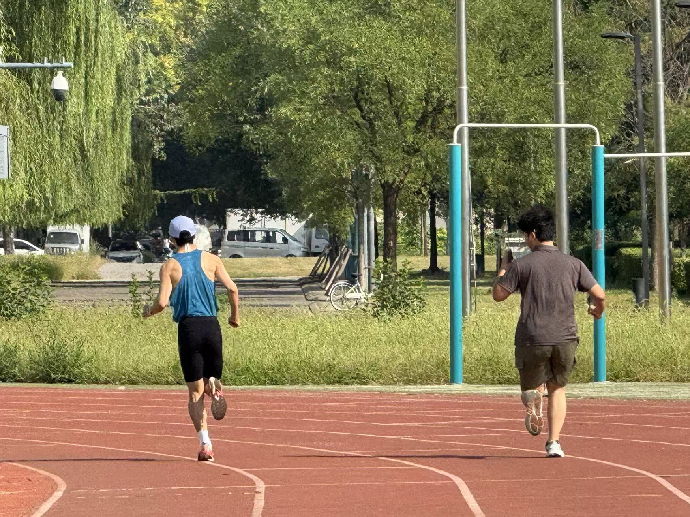
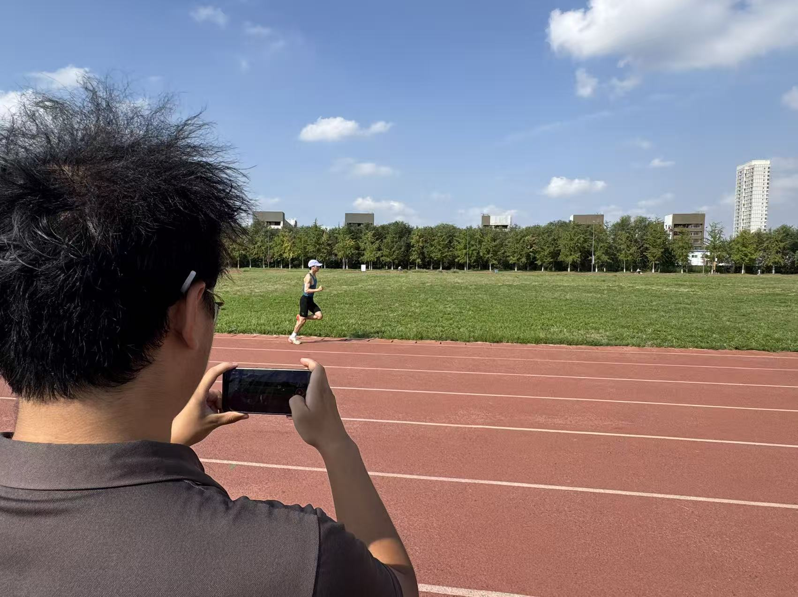
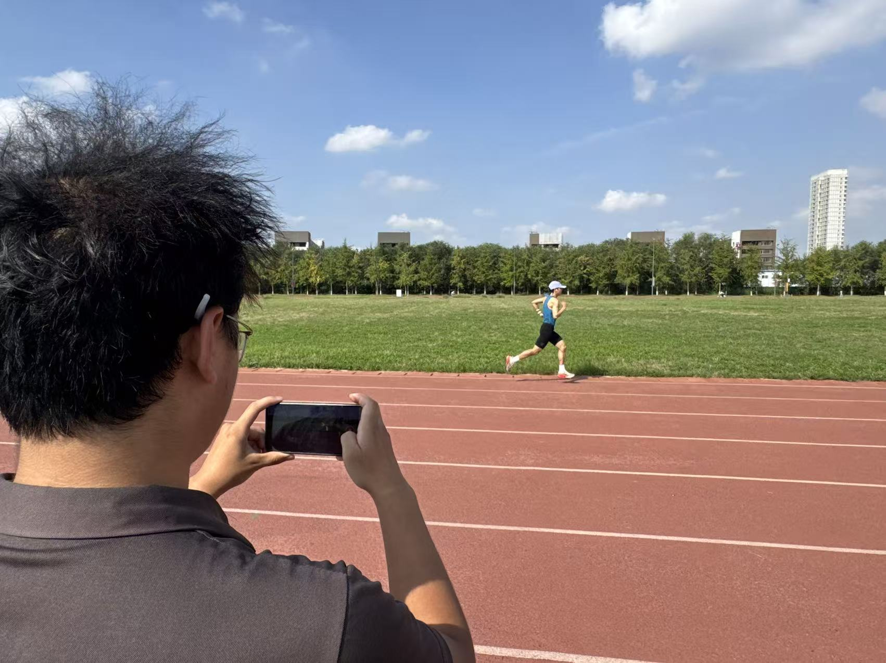
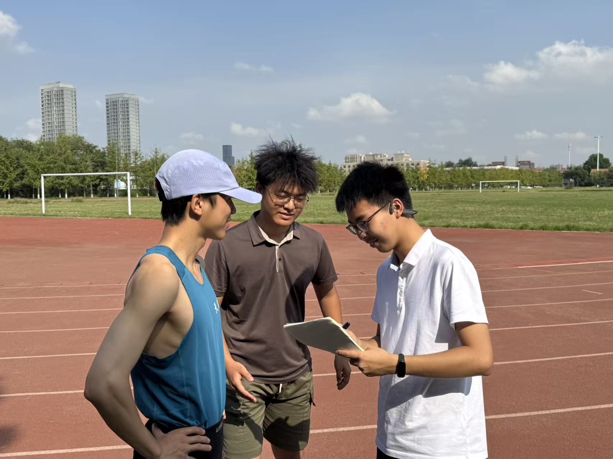

我在 v17 中用 Vimo 采集了 12 位跑者的落地数据，发现步频提到 180 spm 后触地时间平均下降 18%，垂直振幅显著收窄。
核心结论：高步频 + 前掌先落地的组合，对膝盖的冲击峰值降低最明显，建议结合「骨架实时映射」逐帧回看自己的触地瞬间。
利用移动端摄像头实时捕捉姿态，提供基于生物力学的精准建议。




在本地直接运行 MediaPipe，无需上传数据，保护隐私的同时保持实时动态分析。
33个关键点高频采集，将复杂的生物力学数据转化为直观的骨骼动画反馈。
根据您的步频与倾角，AI 教练提供量身定制的训练建议，助力跑姿进化。
还没有账号？ 快速注册
探索全球跑者的智慧与经验